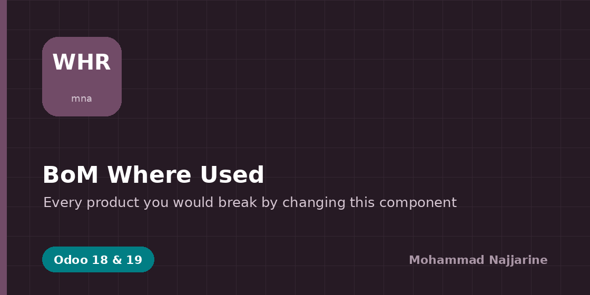
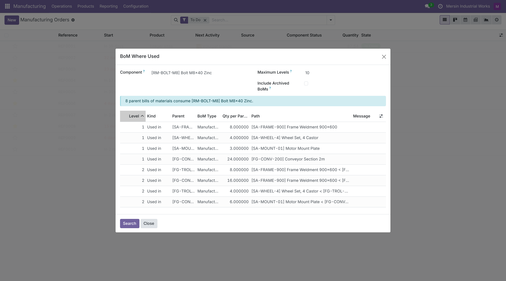
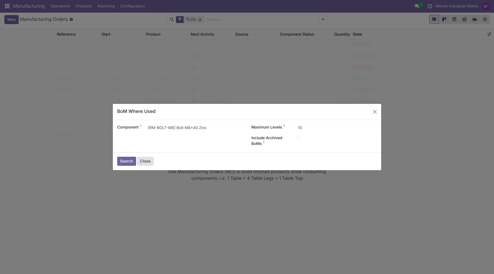

Odoo tells you what a bill of materials is made of. It will not tell you the other way round. Pick a component and there is no screen that answers "which products would I break if I changed this one". People export every bill of materials line to a spreadsheet, which only ever answers the direct level.
This adds that screen, and it climbs.
Free and open source under LGPL-3.
Pick a component and get every bill of materials that consumes it, directly and through sub-assemblies, to the depth you set.
How much of the component goes into one unit of each parent, with every level in between accounted for.
How a screw ends up inside a finished machine, written out as the chain of bills of materials it travels through.
Phantom bills of materials are followed the same way, because a kit hides a component just as effectively.
A sub-assembly that produces 2 and consumes 3 uses 1.5 per unit. Here every level is divided by its own output quantity first, then multiplied up the path, so the figure against a finished product is the quantity you would actually buy.

Pick the component, set how far to climb, and run it. There is nothing else to configure.

A line in grams against a component held in kilograms is converted before anything is multiplied. Without that step a roll-up is out by a factor of a thousand and still looks like a number.
A bill of materials that reaches itself through a sub-assembly, which happens more often than anyone admits, is detected and reported as a loop rather than filling memory. The depth limit is reported too, so you can tell when the limit rather than the data stopped the climb.
Per-unit quantities against different parent products are not added together into a column total, because that figure would be arithmetic without a meaning.
| Odoo | 18.0 and 19.0, Community or Enterprise |
| Depends on | Manufacturing only |
| Licence | LGPL-3, free |
Written and maintained by Mohammad Najjarine, Odoo consultant. Questions, bug reports and customisation requests are answered.
Message me on WhatsApp Code and issues on GitHub
Phone and WhatsApp +961 71 835279